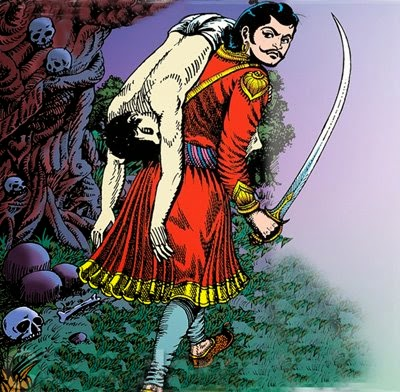
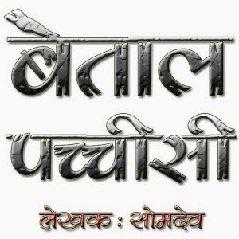

-

बैताल पच्चीसी - प्रारम्भ की कहानी
बहुत पुरानी बात है। धारा नगरी में गंधर्वसेन नाम का एक राजा राज करते थे।..
-

पापी कौन ? - बेताल पच्चीसी - पहली कहानी
काशी में प्रतापमुकुट नाम का राजा राज्य करता था।..
-
पति कौन ? बेताल पच्चीसी - दूसरी कहानी
यमुना के किनारे धर्मस्थान नामक एक नगर था। उस नगर में गणाधिप नाम का राजा राज करता था।..
-
पुण्य किसका ? - बेताल पच्चीसी - तीसरी कहानी
वर्धमान नगर में रूपसेन नाम का राजा राज करता था। एक दिन उसके यहाँ वीरवर नाम का एक राजपूत नौकरी के लिए आया।..
-
ज्यादा पापी कौन ? - बेताल पच्चीसी - चौथी कहानी
भोगवती नाम की एक नगरी थी। उसमें राजा रूपसेन राज करता था।..
-
असली वर कौन? - बेताल पच्चीसी - पाँचवीं कहानी
उज्जैन में महाबल नाम का एक राजा रहता था। उसके हरिदास नाम का एक दूत था..
-
पत्नी किसकी ? - बेताल पच्चीसी - छठी कहानी
धर्मपुर नाम की एक नगरी थी। उसमें धर्मशील नाम का राजा राज करता था।..
-
किसका पुण्य बड़ा ? - बेताल पच्चीसी - सातवीं कहानी
मिथलावती नाम की एक नगरी थी। उसमें गुणधिप नाम का राजा राज करता था।..
-
सबसे बढ़कर कौन ? - बेताल पच्चीसी - आठवीं कहानी
अंग देश के एक गाँव मे एक धनी ब्राह्मण रहता था। उसके तीन पुत्र थे।..
-
सर्वश्रेष्ठ वर कौन - बेताल पच्चीसी - नवीं कहानी
चम्मापुर नाम का एक नगर था, जिसमें चम्पकेश्वर नाम का राजा राज करता था..